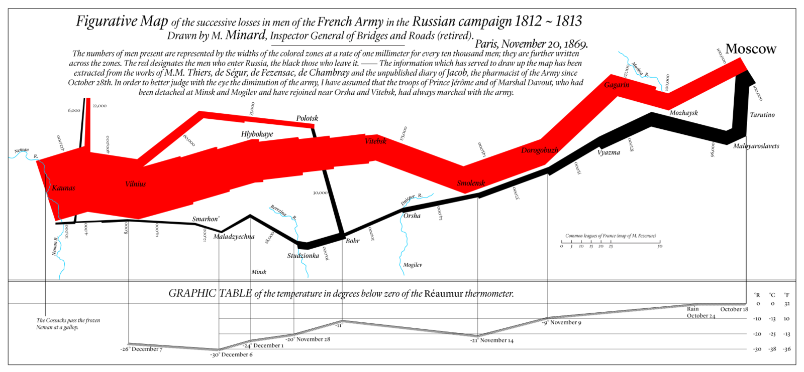

According to Cairo, a good infographic should be truthful, functional, beautiful, insightful and enlightening. After viewing the graphic, viewers’ islands of knowledge should be enlarged, and they tend to learn more based on known knowledge. Here are two visualizations I want to talk about, one is good and the other is a bad one.
The good one I want to talk about is about Napoleon’s march from France to Russia. The horizontal axe represents the progress of the army. The red bonds represent the size of the attack army and the black bonds represent the size of the retreat army. I want to analyze according to Cairo’s guideline of a good visualization. First of all, if it is truthful? There is a short paragraph at the top of the diagram, which illustrates where the information comes from and also explains the simplification the designer used. It provides detailed information about the sources of the information. And all of the information can be searched by ourselves. Thus, we can say that at least the diagram is truthful. Secondly, if it is functional? This diagram is pretty clear, it includes many details, like the temperature of that particular day, and the routes of the army. For ordinary people, this may not be very helpful, but it is really helpful for people who want to study that period of history and this diagram gives them an outline of Napoleon’ s march. Thirdly, if it is beautiful? At least from my point of view, it is beautiful. Most historical diagrams like this just have simple lines on existed maps, which is quite simple but also not attractive. For this diagram, it has color contrast between attack and retreat, which is intriguing. Moreover, if it is insightful? Like I said before, most historical diagrams about routes of some historical events just have lines drawn on the maps which is quite difficult to see for most of times, the lines just mixed with other lines on the map. Finally, if it is enlightening? When Cairo says enlightening, he thinks that the diagram can help viewers learn about more knowledge and then based on the known knowledge, they tend to ask more questions. Keeping doing that, viewers’ islands of knowledge will be enlarged. This diagram works very well on that. According to it, we learn about specific knowledge of Napoleon’s march and after knowing that, we may want to know how he retreats, and we can also find that information on the diagram. After that, we begin to learn more about his army and march, it really enlarges the viewers’ islands of knowledge.
The bad example I want to talk about is the 3D pie chart. It does not have any information about its source, we do not if it is truth or not. Because of its messy 3D shape, viewers cannot differentiate which segment that note corresponds to. They even cannot distinguish each note. Because of its terrible looking, viewers will not be attracted, so they will not read it carefully and get any useful information from that. If they cannot get any information, then they cannot get enlightenment from that, which is the main way for the viewers to enlarge their islands of knowledge. Because its messy looking, if viewers read some of the notes carefully but cannot differentiate the corresponding segment, they will get false knowledge and their islands will even falls short.